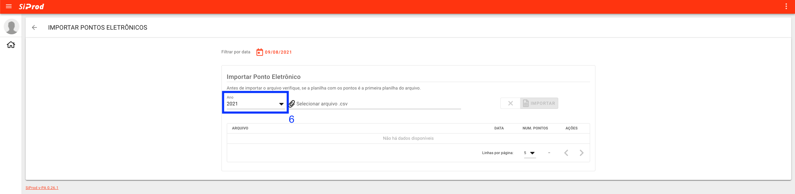
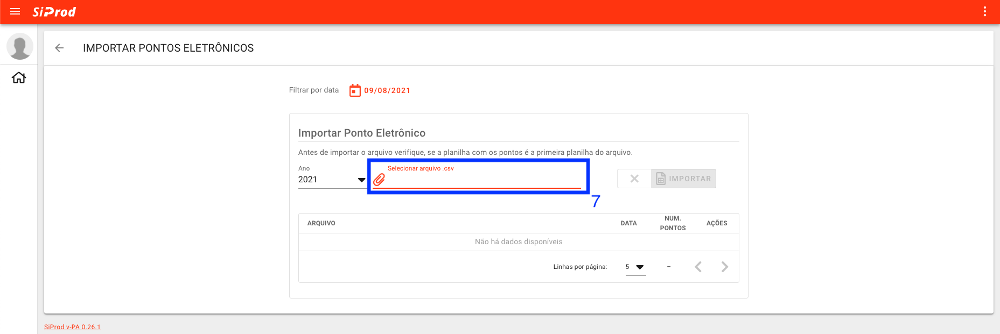

Ponto Eletrônico
- Acesse o sistema siprod_diurno | siprod_noturno.
- Preencha os campos:
E-maileSenha. Clique no botãoENTRAR.
- Clique no cartão
Construção.
- Clique no cartão
Ponto Eletrônico.
- Clique no botão no canto inferior direito.

- Selecione o ano referente ao ponto eletrônico. 
- Selecione o arquivo que contém o ponto eletrônico. 
- Clique no botão
Abrir.
- Clique no botão
Importar.
Atenção
Se tiver Ponto Eletrônico cadastrado nesta data, primeiro deve-se excluir o Ponto Eletrônico antes de cadastrar um novo!